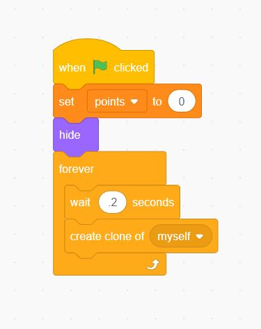
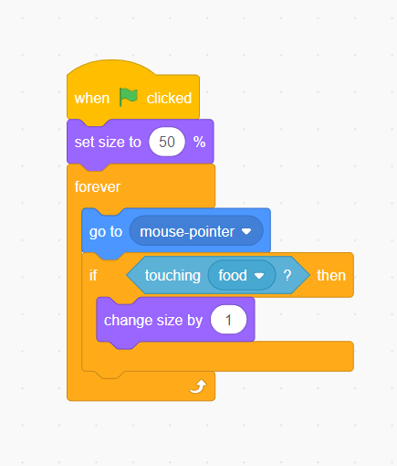

KidzCoding Hour of Code - Eating Simulator
Activity:
In this activity you will learn how to create a food eating game.
Learning Objectives:
- Learn how to manipulate the size of sprites in scratch
- Learn how to use forever loops
- Learn how to effectively use the “hide” and “show” functions within scratch for effective game development
Materials:
Coding Time!
Step one: The creating variable and sprites
- Choose whichever sprite you want to eat the food
- Pick out any food you want from scratch’s provided sprites
- Create a variable called “points”
Step two: Cloning
- With the food sprite selected, add a “when started” block and right below that make it so that the “points” variable is set to zero
- Make it so that the food sprite upon the start of the program hides itself
- In a forever loop, make it so that the sprite waits for a fraction of a second before creating a clone of itself
Step three: designing the clones
 Firstly, begin by adding the “when I start as a clone” block
Firstly, begin by adding the “when I start as a clone” block- Then, make the clone show itself and go to a random location
- Next, in a forever loop, make it so that if the food is touching the food consumer sprite, change the variable “points” by one and hide
Step four: designing the consumer
- Firstly, begin by adding the when started block
- Below the when started block, add a forever loop, and inside the forever loop add a “go to mouse cursor” block
Step five: Adding effects
- By default, the sprites in scratch are pretty big, which makes this game too easy for the average user. To change this, you can use the “set size” and “change size” blocks.
- To do this, you can select the consumer sprite and add a “change size” block
- I recommend you make it at least twice as small as it is normally
- You can do the same thing to the food sprite so its harder to pick up
- Then, if you want to get even more fancy you can make it so that the consumer sprite gains a percentage of mass with each food consumed
Congratulations, you have just completed an Hour of Code!